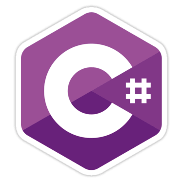
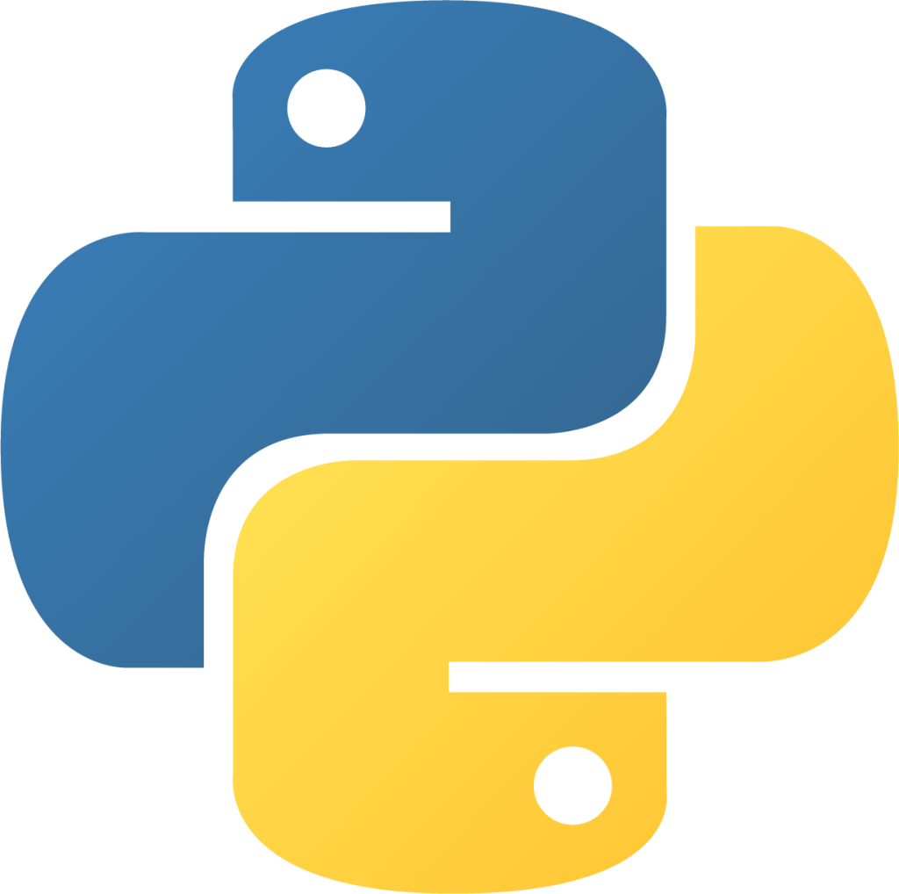

Sobre mí
Comence mi camino en la programacion en Febrero del 2023, incursionando primero en plataformas como freeCodeCamp y Educacion IT. He realizado varios cursos en Cisco Netacad para reforzar mi entendimiento de las redes, como los protocolos TCP/IP, la arquitectura cliente/servidor, los componentes de un paquete, sockets, entre otros conceptos. He sido estudiante de programación desde el 2024 en la UTN, cursando la tecnicatura de programacion, y planeo obtener el titulo para fines del 2025.
Aptitudes



Certificaciones
- Bases de Datos SQL - Educacion IT
- Linux - Educacion IT
- Networking Basics - Cisco Netacad
- Endpoint Security - Cisco Netacad